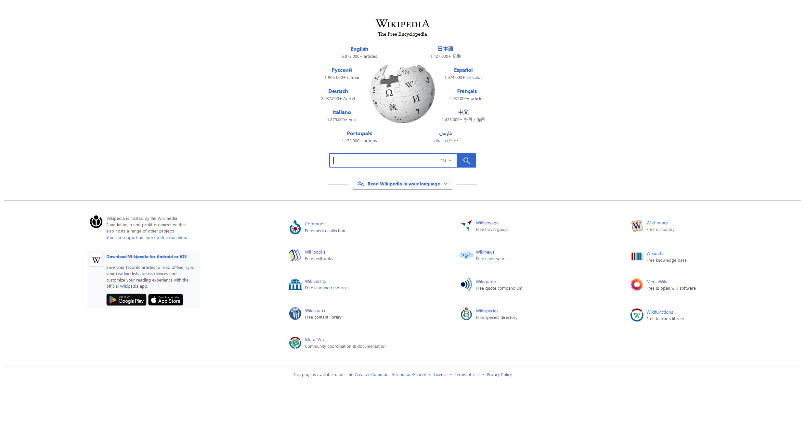

Wild webpages are running across multiple well known websites!
Here is a peculiar day of some weird anomaly present in some well known webpages! Although no photo evidence has been recorded about this strange anomaly, we can say for certain by user reports that some sort of wild website is turning other websites into strange weird looking formations that make no sense whatsoever.
Not much is known about these strange glitchy wild websites other than their repeated attacks in some user's browsers. Some authorities are looking into this current strange problem around these places.
Wekepedia's strange article button bug.

For those who aren't aware, there have been sightings of random buttons in wekepedia. These buttons are blank and seem to have some sort of strange function around them, although not very clear what the purpose of these buttons is, it is clear that they can do really severe damage to the webpage's foundation and infrastructure.
For your own sake, avoid these buttons at all cost if possible!